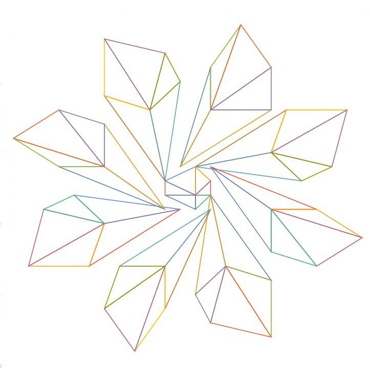

<section class="l-section"><div class="l-section-h i-cf">
<h3>Reverse-Engineering a Thargoid Sensor to contact the Aliens</h3>
<p>CMDR Heisenberg6626 puts forward this proposal to study and try to communicate with the Thargoids via the means of <strong>Project Mercury</strong>, the primary goal of which is to attempt to learn the Thargoid language.</p>

<h4>Project Mercury Strategy Paper:</h4>
<p>[PDF not yet hosted &#8211; original source: <code>https://canonn.science/wp-content/uploads/2017/11/ProjectMercury.pdf</code> (embedded in 2017 via the Google Docs viewer at <code>https://docs.google.com/viewerng/viewer?url=https://canonn.science/wp-content/uploads/2017/11/ProjectMercury.pdf&amp;embedded=true</code>). Described as: the full Project Mercury strategy paper setting out the plan to reverse-engineer a Thargoid sensor (Unknown Artefact) in order to attempt communication with the Thargoids. A copy of the PDF itself survives in the Wayback Machine at <code>https://web.archive.org/web/20231209192335/https://cdn-5f3c0a05c1ac180394b62f3c.closte.com/wp-content/uploads/2017/11/ProjectMercury.pdf</code>.]</p>

<hr/>
<h4>Thargoid ship drawing morse audio:</h4>
<p>The following audio corresponds with the sounds the Thargoid sensor needs to make to &#8216;draw&#8217; a Thargoid Interceptor.</p>
<p>[Audio not yet hosted &#8211; original source: <code>https://canonn.science/wp-content/uploads/2017/11/Project_Mercury_Thargoid_Drawing_Morse.mp3</code>. Described as: an MP3 recording of the morse-code-like tones the Thargoid sensor emits while &#8216;drawing&#8217; the shape of a Thargoid Interceptor. A copy survives in the Wayback Machine at <code>https://web.archive.org/web/20241208103414/https://cdn-5f3c0a05c1ac180394b62f3c.closte.com/wp-content/uploads/2017/11/Project_Mercury_Thargoid_Drawing_Morse.mp3?_=1</code>.]</p>

<hr/>
<h4>Encoded message in Thargoid Sensor morse drawing format:</h4>
<p>The following code is the encoded graph elements required to draw out the diagram.</p>
<pre>MLOEOH, MLOHSH, OEOHQB, OHQBSE, OHSESH, NLTHSK, NLSKUM, THSKXH, SKXHWL, SKWLUM, OLVOSO, OLSOSR, VOSOYQ, SOYQVS, SOVSSR, ONSTPS, ONPSNU, STPSSX, PSSXOW, PSOWNU, OOLVLS, OOLSIS, LVLSJY, LSJYHV, LSHVIS, MOGSHP, MOHPFN, GSHPCS, HPCSDO, HPDOFN, LOELHL, LOHLHI, ELHLBJ, HLBJEH, HLEHHI, LMHGKH, LMKHMF, HGKHHC, KHHCLD, KHLDMF, NNLMLN, NNLMNL, NNNLOM, NNOMON, NNONNO, NNNOLN</pre>

<hr/>
<h4>Tool to convert the data into images:</h4>
<p>The tool available from the following link can be used to plot out the encoded text to give the diagram.</p>
<p><a href="https://unwantedusername.github.io/eliteMorseDraw/" target="_blank" rel="noopener">https://unwantedusername.github.io/eliteMorseDraw/</a></p>
</div></section>
